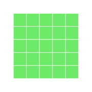

rBlocks
2014-03-12


One of the challenges associated with learning any programming language is being able to access and manipulate data structures. I have often heard from students that they find it hard to understand the different ways of slicing and dicing data in R.
As I researched different solutions to teach these concepts more effectively, I chanced upon the wonderful world of ipythonblocks. Here is a brief description of the tool by its creator Matt Davis.
The more I explored ipythonblocks, the more I became convinced that it is a wonderful way to introduce basic concepts of a programming language in a fun and visual manner. I wanted to bring this tool to the world of R, and so I created rBlocks.
Currently, it is just a set of functions, but I plan to develop it into a full fledged package. So why am I blogging about it now, if it is still work-not-ready-to-be-shown? Well, I am looking to share what I have done so far, give you a demo of what concepts of the language it can help explain, and most importantly seek feedback and attract contributions!
Without any further talk, let me dig straight into rBlocks. If you want to follow along, please download rBlocks.R and source it into your workspace.
Vectors
The workhorse function in rBlocks is block_grid, which creates a data structure. It currently supports creating a vector, matrix and data.frame. Let us use block_grid to create a vector and see how we can use it to illustrate some concepts of programming.
grid1 <- block_grid(5, type = "vector")
grid1

So how can we use this to teach indexing? Well, for starters, we can show the different ways to access elements of a vector (using positive integers, negative integers, logical vectors etc. as indices)
## index using positive integers
grid1[1:2] <- "red"
grid1
# index using negative integers
grid2 <- block_grid(5, type = "vector")
grid2[-c(1:3)] <- "blue"
grid2
# index using logical vectors
grid3 <- block_grid(5, type = "vector")
grid3[c(T, F, T, F, T)] <- "darkred"
grid3
One challenging concept for those new to R is the recycling rule. rBlocks can be used to explain this concept visually.
grid4 <- block_grid(5, type = "vector")
grid4[c(T, F)] <- "blue"
grid4
In this example, we are using a logical vector c(T, F) to access elements of the vector grid4. According to the recycling rule, this short vector is expanded out as c(T, F, T, F, T) to match the length of grid4. The grid image makes on top makes it easy to understand what is happening.
Control Structures
rBlocks can be used to motivate users to learn about basic control structures. For this example, we will create a matrix and write a for loop to set elements on the diagonal to the color firebrick (thanks to Alyssa Frazee and the RSkittleBrewer package for making me more color aware).
grid5 <- block_grid(5, 5, type = "matrix")
for (i in 1:5) {
grid5[i, i] <- "firebrick"
}
grid5
It can be used to explain subtle differences between indexing data.frames and matrices like in the example below.
# single index accesses first element of matrix
grid6 <- block_grid(5, 5, type = "matrix")
grid6[1] <- "dodgerblue3"
grid6
# single index accesses first column of data.frame
grid7 <- block_grid(5, 5, type = "data.frame")
grid7[1] <- "dodgerblue3"
grid7
We can use it to teach about apply functions. For example, let us use apply to change the light green cells in grid7 to olivedrab and the blue cells to darkslategray.
grid8 = apply(grid7, 2, function(df) {
if (sum(df == "dodgerblue3") == 5) {
df[] = "darkslategrey"
} else {
df[] = "olivedrab"
}
return(df)
})
display(grid8)
One of the gotchas in R is how it coerces data structures when subsetting. Here is a simple way to visualize this behavior with data.frames.
grid9 = block_grid(5, 5)
# extracting the first column converts it to a vector
grid10 = grid9[, 1]
grid9
display(grid10)

I can go on-and-on, but I think you get my message. What I have shown is barely scratching the surface. So, what is my vision with this package?
For starters, I want a more robust implementation of the core functions so that it prints as a grid no matter what operations a user runs on it! I like the ipythonblocks API, and so something closer to it would be awesome.
I want to be able to model more data structures. For example,
listsandarrays. A visual model forlistswould allow clarifying the difference between[[and[!A better visual grid. Maybe
d3jswith hover, some text labels displaying actual data? What about some animation to visualize a loop or anlapplycall.Finally, a mechanism that would allow R users to submit examples illustrating different concepts using
rBlocksthat teachers of the language can fork and reuse for their own lessons.
I might be way-off with my wish-list, but this is my way of giving back to the wonderful R community that has given me so much! I am open to feedback, suggestions and contributions!